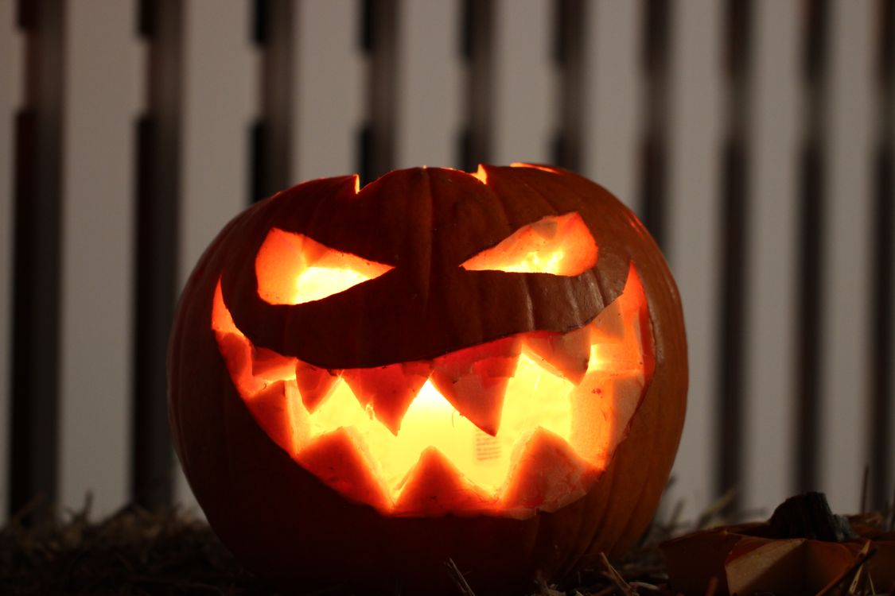
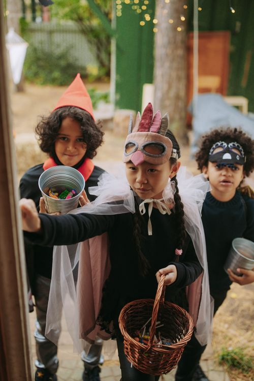

Hari ini 31 Oktober 2026, dan kamu pasti lihat simbol Halloween di mana-mana: labu ukir wajah serem yang menyala, orang-orang berkostum aneh, sampai anak-anak yang keliling minta permen di film-film luar negeri. Di Jakarta pun malam ini ada parade kostum dan festival musik bertema Halloween. Tapi pernah kepikiran tidak, kenapa harus labu? Kenapa kostumnya harus seram? Ternyata semua simbol itu punya asal-usul yang panjang, dari sebuah festival kuno di Irlandia ribuan tahun lalu.
Nama Halloween itu singkatan
Kata Halloween ternyata kependekan dari "All Hallows' Even", yang artinya malam sebelum All Saints' Day, hari raya para orang suci yang jatuh pada 1 November. Ceritanya, pada abad ke-7 Paus Gregorius III memindahkan perayaan para orang suci ke tanggal 1 November. Malam sebelumnya dikenal sebagai All Hallows' Eve, lalu lama-lama disingkat jadi Halloween. Jadi nama Halloween itu lahir dari kalender gereja, bukan dari film horor.
Labu ukir itu awalnya dari lobak
Sebelum kamu protes, ini serius. Labu yang menyala di teras rumah orang Amerika itu dulu bukan labu. Di Irlandia dan Skotlandia, orang mengukir wajah ke lobak, kentang, ubi bit, bahkan lobak putih, lalu menaruh bara di dalamnya buat lentera. Tradisinya datang dari legenda Stingy Jack, penipu licik yang katanya berhasil mengakali iblis sampai ia ditolak dari surga maupun neraka. Jack akhirnya terpaksa berkeliaran di bumi hanya dengan sebongkah bara api, yang ia taruh di lobak kosong supaya bisa jadi lampu. Julukannya "Jack of the Lantern", lama-lama jadi Jack-o'-lantern. Jadi lentera Jack-o'-lantern awalnya memang lentera dari lobak.
Perubahan dari lobak ke labu terjadi ketika imigran Irlandia berbondong-bondong datang ke Amerika pada 1840-an. Di sana mereka menemukan labu: lebih besar, lebih lunak, dan jauh lebih mudah diukir dibanding lobak yang keras. Sejak itu labu jadi simbol Halloween yang kita kenal sekarang.

Kenapa orang pakai kostum dan keliling minta permen
Cerita kostum juga berakar dari festival kuno. Bangsa Celtic merayakan Samhain, festival akhir panen dan awal musim dingin, dan percaya bahwa pada malam itu batas antara dunia orang hidup dan dunia roh menipis, jadi roh bisa berkeliaran. Orang-orang menyamar dengan topeng kain atau kulit hewan supaya dikira roh juga, dan tidak diganggu. Festival Samhain sendiri diperkirakan sudah berusia lebih dari 2.000 tahun, dan menjadi akar dari hampir semua simbol Halloween modern.
Tradisi itu berkembang jadi dua kebiasaan. Pertama, guising di Skotlandia dan Irlandia, yang tercatat sejak abad ke-16: anak-anak berkostum keliling dari rumah ke rumah, menyanyi atau membaca puisi, lalu dapat makanan atau buah sebagai imbalan. Kedua, souling di Inggris dan Irlandia pada abad pertengahan: orang-orang yang kurang mampu keliling rumah menawarkan doa untuk kerabat tuan rumah yang sudah meninggal, dibayar dengan kue khusus bernama soul cakes.
Dua kebiasaan itu ikut terbawa ke Amerika dan lama-lama melebur jadi trick-or-treat. Kata "trick" masuk karena pada 1920-an, keisengan Halloween sedang populer di AS, sehingga anak-anak kadang mengerjai rumah yang tidak memberi permen. Lucunya, istilah "trick-or-treat" sendiri baru tercatat dipakai di Amerika pada 1928, dan kebiasaan anak keliling minta permen baru benar-benar populer di AS pada 1920-an. Jadi tradisi yang kelihatannya kuno ini sebenarnya versi modernnya baru seumur kakek kita.

Halloween di Indonesia hari ini
Di Indonesia, Halloween memang bukan tradisi asli. Tapi perayaan ini tetap ikut ramai, terutama di kota besar. Hari ini, 31 Oktober 2026, akun resmi TMII di Instagram mempromosikan gratis masuk bagi pengunjung yang datang dengan kostum, dari kostum horor sampai karakter film. Di Jakarta, media mencatat sedikitnya tujuh event Halloween, dari festival musik EDM Scream or Dance sampai parade kostum Magical Halloween di Dufan.
Tren kostum tahun ini pun sudah ada datanya. Google lewat daftar Frightgeist 2026 mencatat kostum yang paling banyak dicari menjelang Halloween tahun ini, dipimpin maskot unicorn dari film horor Buddy, mainan squishy NeeDoh, dan karakter Nikki dari film Obsession. Jadi kalau malam ini kamu bingung mau pakai kostum apa, tiga nama itu lagi ramai dipakai.
Penutup
Jadi sekarang kamu tahu: nama Halloween lahir dari kalender gereja abad ke-7, labu ukirnya berawal dari legenda penipu Irlandia yang lampunya dari lobak, dan tradisi kostum serta minta permen lahir dari doa dan nyanyian di rumah-rumah penduduk ratusan tahun lalu. Malam ini, kalau kamu lihat orang berkostum atau labu yang menyala, kamu bisa cerita asal-usulnya. Itu jauh lebih seru daripada sekadar takut. Kalau kamu ke TMII atau ke salah satu event di Jakarta malam ini, coba perhatikan kostum-kostumnya: hampir semuanya berakar dari cerita yang baru saja kamu baca. Selamat Halloween, dan jangan lupa bawa pulang permen yang banyak.
Sumber dan Info Resmi
Fakta dan detail di artikel ini merujuk ke sumber berikut, yang sudah diverifikasi isinya:
- Providence Journal: Halloween Started Over 2000 Years Ago, History of the Holiday (24 Oktober 2026): akar Samhain lebih dari 2.000 tahun (mengutip Smithsonian Magazine), Paus Gregorius III abad ke-7 memindahkan perayaan orang suci ke 1 November, imigrasi Irlandia dan Skotlandia 1840-an membawa Halloween ke AS, guising tercatat sejak abad ke-16, trick-or-treat populer di AS sejak 1920-an dengan frasa tercatat pertama pada 1928, serta legenda Stingy Jack dan lentera dari lobak, kentang, dan ubi bit (mengutip History Channel).
- KidsGen: History of Halloween: "Halloween" kependekan "All Hallows' Even", tradisi menyebar luas dari 1840-an bersama imigrasi Irlandia, souling dan guising sebagai leluhur trick-or-treat, legenda Stingy Jack dengan lobak yang diganti labu di Amerika.
- Stellar.ie: Samhain, Uncovering the Irish Roots of Halloween: Samhain pada 31 Oktober dengan keyakinan batas dunia hidup dan mati menipis, jack-o'-lantern asli diukir dari lobak, penyamaran dengan topeng kain atau kulit hewan yang berkembang jadi guising.
- Holopis: 6 Tren Kostum Halloween 2026 yang Lagi Populer (28 Oktober 2026): daftar kostum Google Frightgeist 2026, dipimpin Buddy the Unicorn di peringkat 1, lalu NeeDoh dan Nikki dari film Obsession.
- Popbela: Event Halloween di Jakarta (29 Oktober 2026): tujuh event Halloween di Jakarta, termasuk Noya Holywings Fluffy Monsterland, Dufan Magical Halloween, dan Scream or Dance.
- Instagram @tmiiofficial: promo gratis masuk TMII bagi pengunjung berkostum pada 31 Oktober 2026.